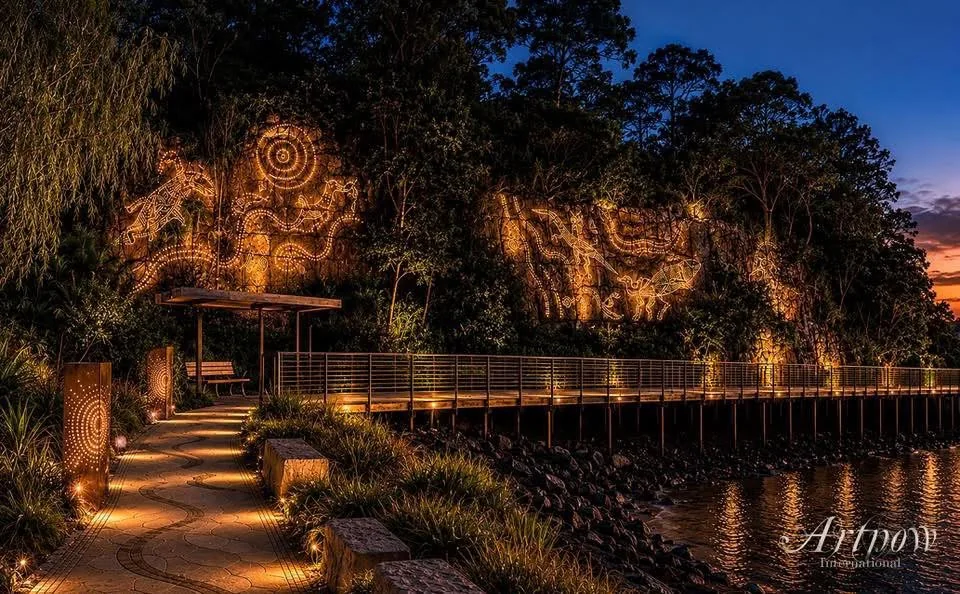

Discussion image
Cliff lighting and boardwalk arrival
A night-time arrival idea with warm cliff illumination, a foreshore boardwalk, planting, low seating and a sheltered rest point.
Good review questions: cultural permissions, light spill, wildlife impact, maintenance, public safety, storm exposure and whether the arrival path still works during ferry peaks.